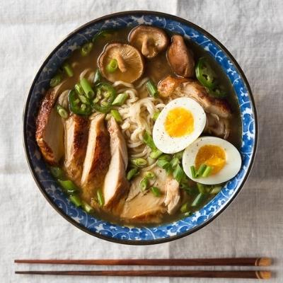

Homemade Chicken Ramen
Back to Recipes

If you're an anime lover such as myself, you probably enjoy some good ole fashion ramen.
This recipe may not be the same quality as your favorite anime noodle shop, Ramen Ichiraku,
but it's pretty close.
Let's start with the ingredients.
Ingredients
- 2 boneless chicken breasts (skin on)
- Kosher Salt and freshly-ground pepper to season
- 1 Tbsp unsalted butter
- 2 tsp sesame oil
- 2 tsp fresh ginger, minced
- 1 Tbps fresh garlic, minced
- 3 Tbsp low-sodium soy sauce
- 2 Tbsp mirin
- 4 cups chicken stock
- 1 oz dried shitake mushrooms
- 1-2 tsp sea salt, to taste
- 2 large eggs
- 1/2 cup scallions, sliced
- 2 (3 oz) packs dried ramen noodles
Time to Cook
- Cook the chicken*: Preheat the oven to 375℉. Season the chicken generously with salt and pepper.
- Melt the butter in a large oven-safe skillet over medium heat. Add the chicken, skin-side down,
and cook until the skin is golden brown and releases easily from the pan, about 5-7 minutes. Flip
the chicken over and cook for another 4-5 minutes, until golden.
- Transfer the skillet to the oven and roast for 15-20 minutes, until the chicken is cooked through.
Remove from the oven, transfer the chicken to a plate and cover with foil until ready to serve.
- Make the ramen broth: Heat the oil in a large pot over medium heat, until shimmering. Add the garlic
and ginger, and cook for a few minutes until softened. Add the soy sauce and mirin, and stir to
combine. Cook for another minute.
- Add the stock, cover, and bring to boil. Remove the lid, and let simmer uncovered for 5 minutes,
then add the dried mushrooms. Simmer gently for another 10 minutes, and season with salt, to taste.
- Make the soft-boiled eggs: Fill a pot with enough water to cover the eggs, and bring to a boil.
Gently lower the eggs (still cold from the fridge) into the boiling water, and let simmer for 7
minutes (for a slightly-runny yoke) or 8 minutes (for a soft, but set-up yoke).
- Meanwhile, fill a large bowl with ice water. When the timer finishes, transfer the eggs to the ice
bath to stop the cooking process. Wait at least 5 minutes, or until cool enough to handle, then
carefully peel away the shell and slice in half, lengthwise. Set aside until ready to serve.
- Assemble the ramen bowls: Meanwhile, chop the scallions and jalapeño (if using). Slice the chicken
into thin pieces. Set aside. When the eggs finish cooking, add the ramen noodles to the boiling water.
- Cook for 2-3 minutes, until soft, then divide the noodles into two large bowls. Add the sliced chicken
and the ramen broth. Top with the fresh scallions, jalapeño and the soft boiled egg. Serve immediately.
- Enjoy :)
Original Recipe
Back to top of page